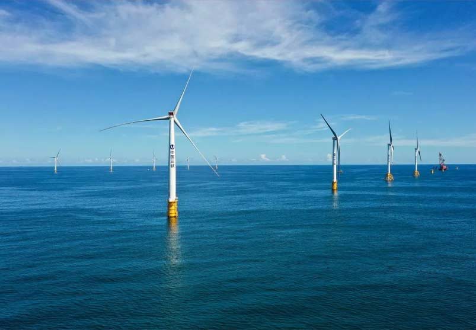
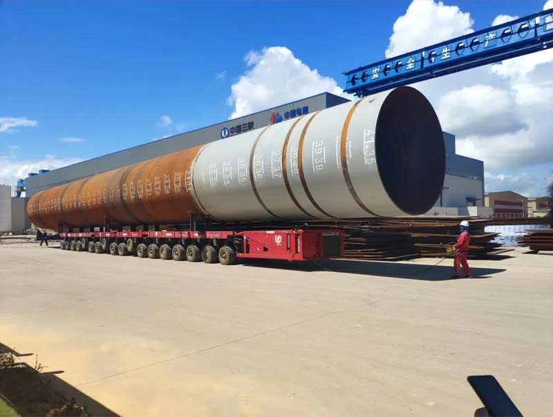
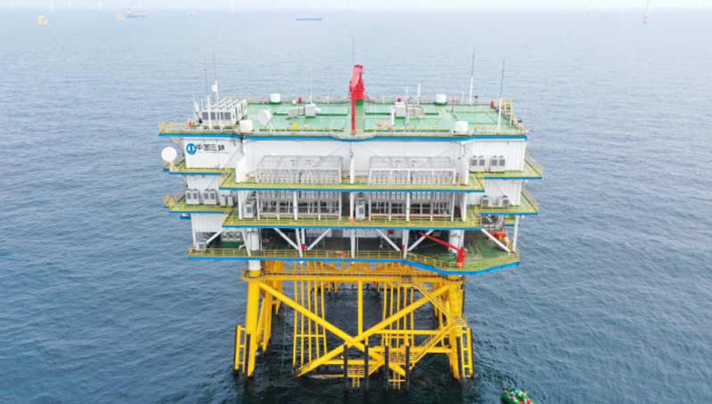
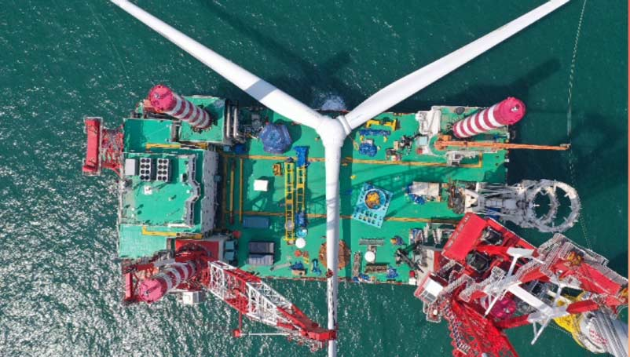

红色地标解码
| 阳江海上风电
1978年12月，党的十一届三中全会作出了把党和国家工作中心转移到经济建设上来、实行改革开放的历史性决策。
中国改革开放的总设计师邓小平支持广东先行先试，率先创办经济特区。改革开放的春风从南粤土地上吹起，被激活的春水在中国版图上澎湃奔腾。从改革开放的伟大实践中孕育出的红色精神也深深地烙印在这片土地的奋斗者身上，他们用开拓创新、勇于担当书写着一个又一个春天的故事……
地处广东的阳江，是一个拥有丰富海洋资源的海滨城市。御风而行、向海而兴，一群为风电梦想不断奋斗的三峡人如今在这里默默耕耘……

三峡能源阳江沙扒海上风电项目位于广东省阳江市沙扒镇南面海域，共规划五期，总装机容量170万千瓦。该项目是国内首个“百万千瓦级”海上风电基地，为我国海上风电集中连片规模化开发先行先试项目。

项目所在海域风大浪急，地质条件复杂，基岩面高低起伏，给项目施工带来了极大的困难。面对挑战，项目团队成员积极探索适应南海海域的新型基础型式，不断优化施工工艺，项目使用的吸力筒导管架、芯柱式嵌岩基础、大直径四桩导管架等多种基础形式均为国内首次。

国内首个大直径四桩导管架基础

国内单体容量最大海上升压站

南海海域首个7兆瓦风机
据估算，阳江海上风电项目建成后每年可提供上网电量47亿千瓦时，可满足约200万户家庭年用电量。与同等规模的燃煤电厂相比，每年可节约标准煤约150万吨、减排二氧化碳约400万吨，将为实现粤港澳大湾区的能源结构转型和“碳达峰、碳中和”目标提供有力支持。
一座座大风车在辽阔的阳江海域迎风而立。更远处，海上风电正逐渐走向深海远海，走向更灿烂可期的未来。（作者：徐超）
中国三峡出版传媒公司
出品
出品